People
Principal Investigator
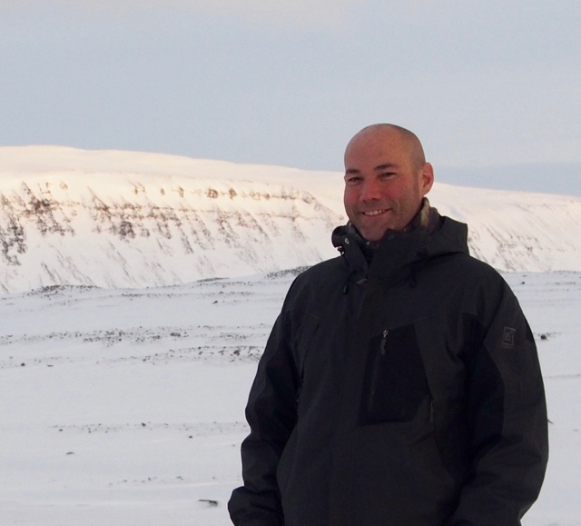
Brent Minchew
Brent is a Texan and (former) United States Marine. He received B.S. and M.S. in Aerospace Engineering from the University of Texas at Austin and his Ph.D. in Geophysics from Caltech in 2016. He held an NSF Postdoctoral Fellowship at the British Antarctic Survey working with Hilmar Gudmundsson before joining the MIT faculty in January 2018. He was promoted to associate professor with tenure in 2024, served as chair of the Program in Geophysics at MIT, and joined the Caltech faculty in 2025. Brent is also co-founder and chief scientist of the Arête Glacier Initiative.
Postdoctoral Scholars
Evan Kramer
Graduate Students
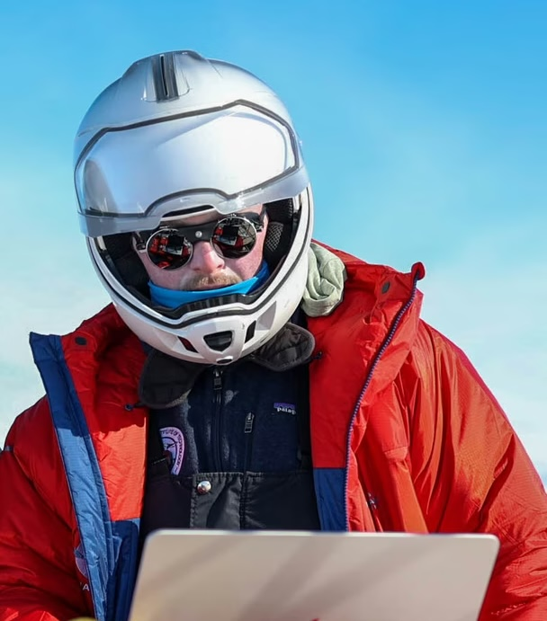
Thatcher Chamberlin
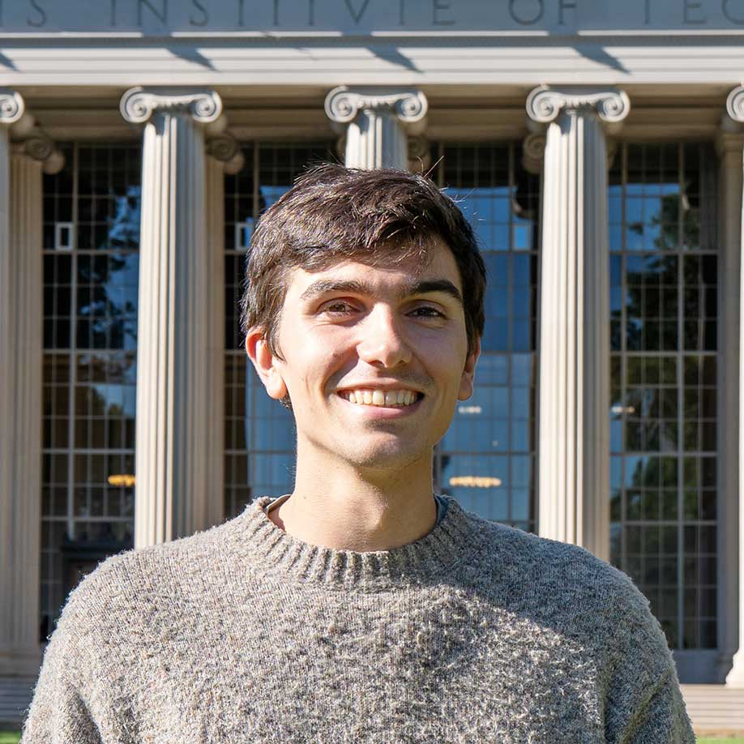
Max Filter
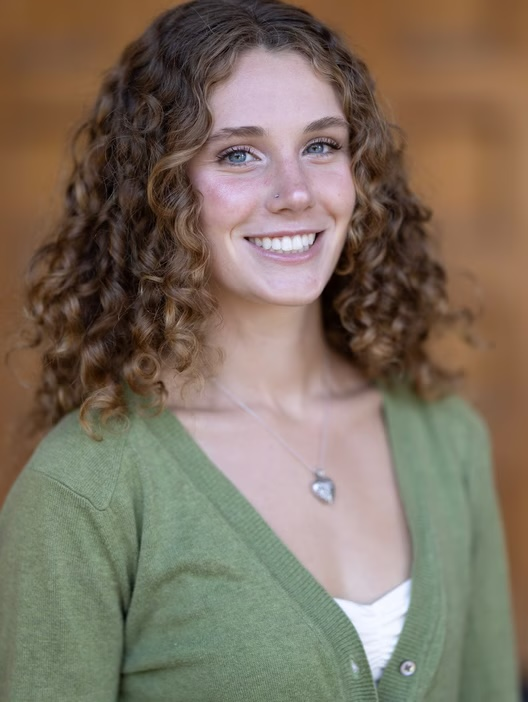
Elena Dworak
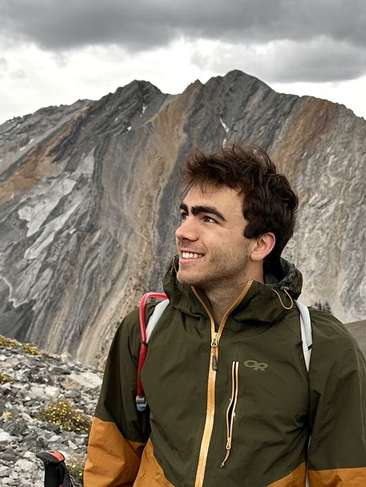
Jackson Fellows
Mma Ikwut-Ukwa
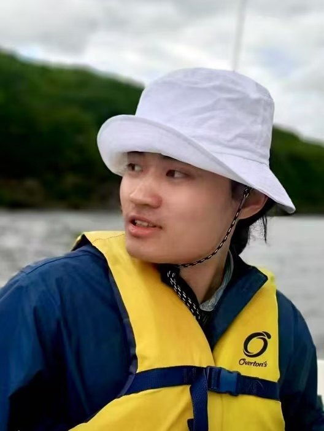
Yi Li
Justin Linick

Alex Miller
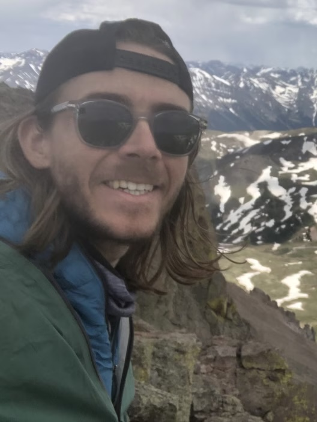
Ben Reynolds
Alumni
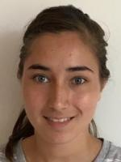
Fiona Clerc
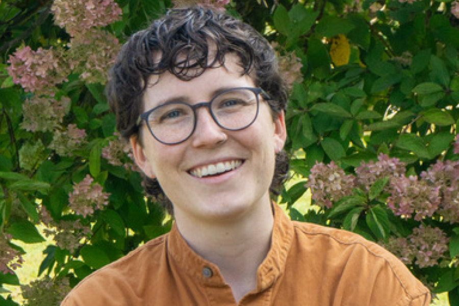
Annick Dewald
Faye Hendley Elgart
- “Estimating Ice Shelf Thickness in Grounding Zones of the Filchner-Ronne Ice Shelf with Tidal Flexure from ICESat-2,” in review, 2026.
- “Estimating effective elasticity in grounding zones of the Ross Ice Shelf with tidal flexure from ICESat-2,” Journal of Glaciology, 2026. [doi]
Pierce Hunter
- “Thermal controls on ice stream shear margins,” Journal of Glaciology, 2021. [doi]
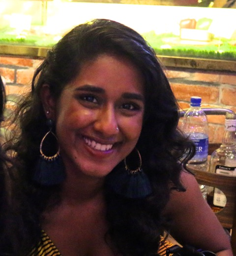
Brindha Kanniah
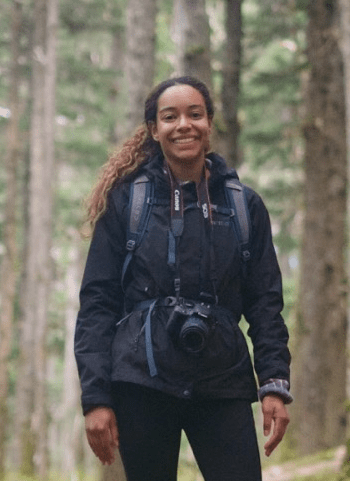
Mila Lubeck
Joanna Millstein
Neosha Narayanan
- “Simulating seasonal evolution of subglacial hydrology at a surging glacier in the Karakoram,” Journal of Glaciology, 2025. [doi]
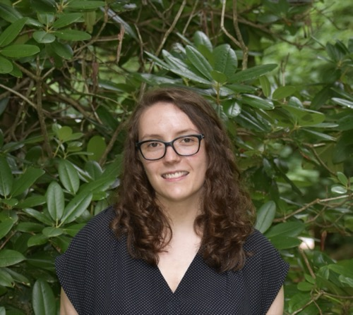
Grace O'Neil
Ufuoma Ovienmhada
- “Spatiotemporal Facility-Level Patterns of Summer Heat Exposure, Vulnerability, and Risk in United States Prison landscapes,” GeoHealth, 2024. [doi]
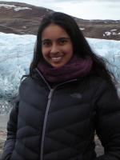
Meghana Ranganathan
- “Fracture criteria and tensile strength for natural glacier ice calibrated from remote sensing observations of Antarctic ice shelves,” Journal of Glaciology, 2025. [doi]
- “A modified viscous flow law for natural glacier ice: Scaling from laboratories to ice sheets,” Proceedings of National Academy of Sciences, 2024. [doi]
- “The effect of uncertainties in creep activation energies on modeling ice flow and deformation,” EarthArXiv, 2023. [doi]
- “Meltwater generation in ice stream shear margins: Case study in Antarctic ice streams,” Proceedings of the Royal Society A: Mathematical, Physical and Engineering Sciences, 2023. [doi]
- “Deformational-energy partitioning in glacier shear zones,” Earth and Space Science Open Archive, 2022. [doi]
- “Recrystallization of ice enhances creep and the vulnerability to fracture of ice shelves,” Earth and Planetary Science Letters, 2021. [doi]
- “A new approach to inferring basal drag and ice rheology in ice streams, with applications to West Antarctic ice streams,” Journal of Glaciology, 2021. [doi]
Bryan Riel
- “Disintegration and Buttressing Effect of the Landfast Sea Ice in the Larsen B Embayment, Antarctic Peninsula,” Geophysical Research Letters, 2023. [doi]
- “Variational inference of ice shelf rheology with physics-informed machine learning,” Journal of Glaciology, 2023. [doi]
- “Helheim Glacier ice velocity variability responds to runoff and terminus position change at different timescales,” Nature Communications, 2022. [doi]
- “Data-driven inference of the mechanics of slip along glacier beds using physics-informed neural networks: Case study on Rutford Ice Stream, Antarctica,” Journal of Advances in Modeling Earth Systems, 2021. [doi]
- “Observing traveling waves in glaciers with remote sensing: New flexible time-series methods and application to Sermeq Kujalleq (Jakobshavn Isbræ), Greenland,” The Cryosphere, 2021. [doi]
- “Observing traveling waves in glaciers with remote sensing: Part 2. Insights from physical models and constraints on inverse models,” The Cryosphere, 2020.
Kasturi Shah
- “Dynamics of two-layer fluid flows on inclined surfaces,” Journal of Fluid Mechanics, 2021. [doi]
Yudong Sun
- “Disintegration and Buttressing Effect of the Landfast Sea Ice in the Larsen B Embayment, Antarctic Peninsula,” Geophysical Research Letters, 2023. [doi]
Erik Tamre
Lizz Ultee
- “Helheim Glacier ice velocity variability responds to runoff and terminus position change at different timescales,” Nature Communications, 2022. [doi]
- “Tensile strength of glacial ice deduced from observations of the 2015 Eastern Skaftá Cauldron collapse, Vatnajökull ice cap, Iceland,” Journal of Glaciology, 2020. [doi]
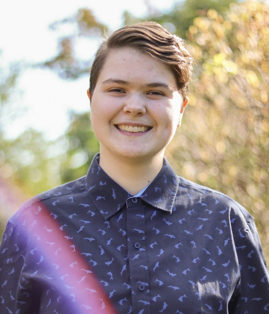
Sarah Wells-Moran
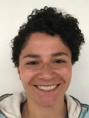